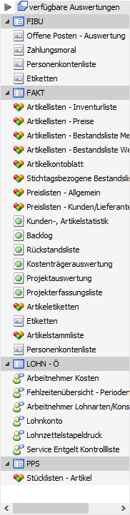
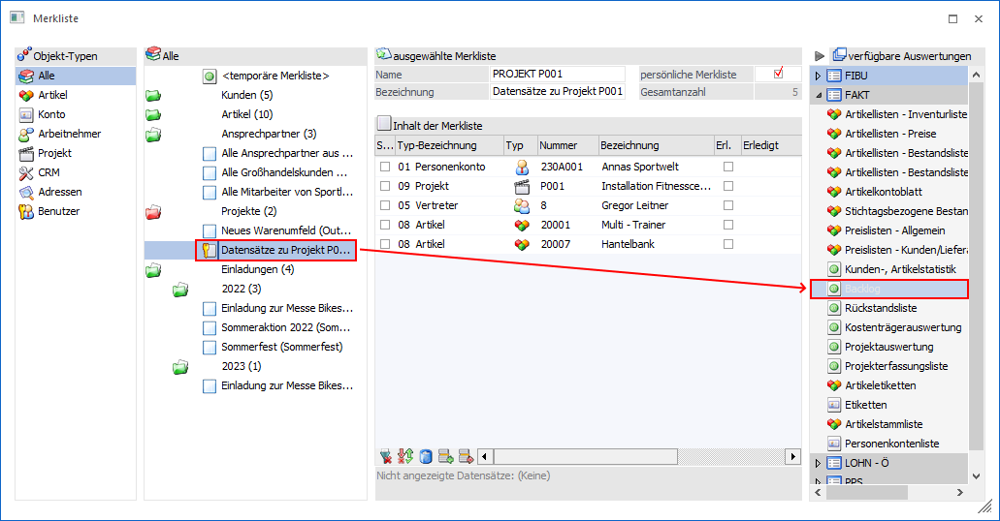
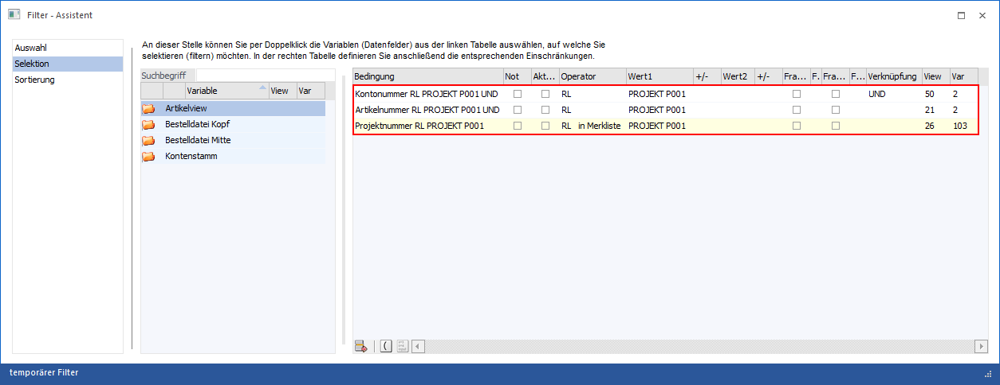
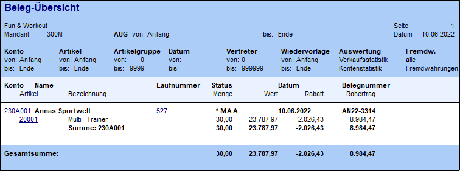
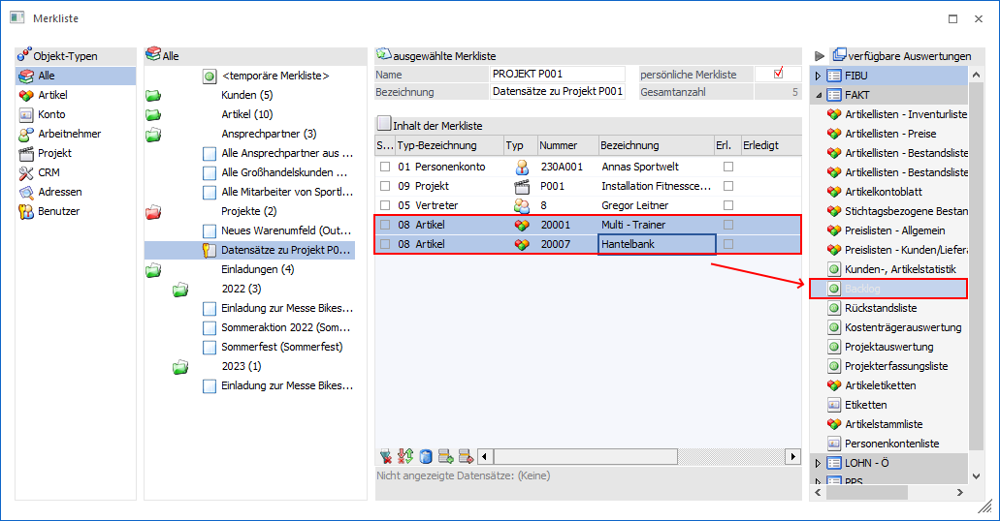
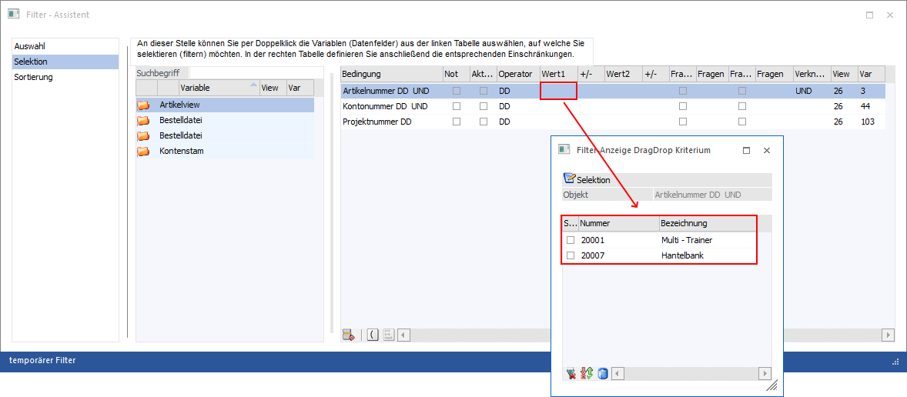
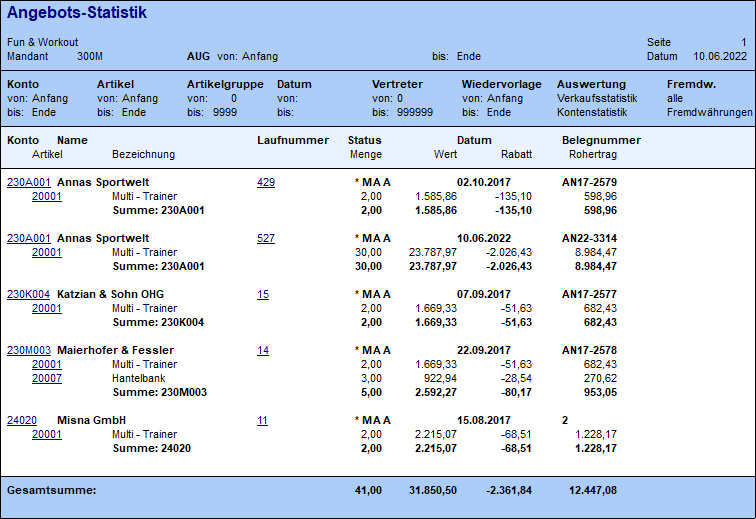
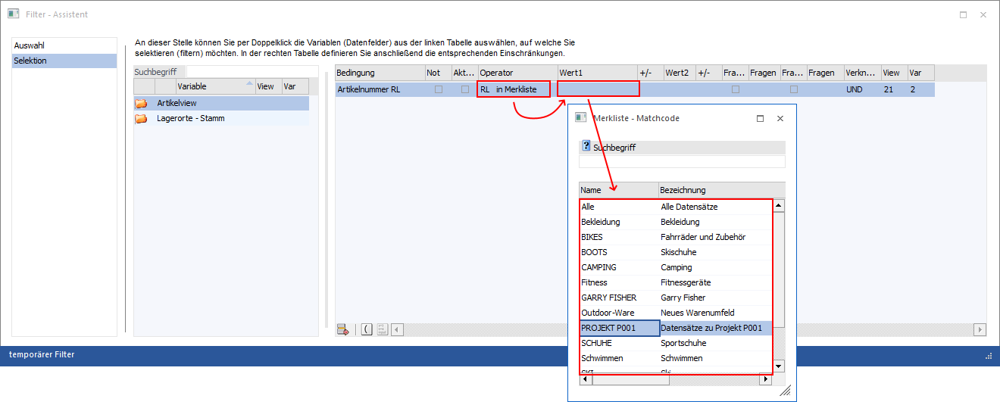

Es gibt mehrere Varianten, wie eine Merkliste als Selektionskriterium verwendet werden kann:
Fenster "Merkliste" - Drag & Drop einer Merkliste auf Bereich "verfügbare Auswertungen"
Angelegte Merklisten können für eine Reihe von Auswertungen als Selektionskriterium herangezogen werden. Eine Auswahl von Auswertungen wird hierbei direkt im Fenster Merkliste über den Bereich "verfügbare Auswertungen" zur Verfügung gestellt.

Die Icons dieser Auflistung zeigen hierbei an, welche Datensätze aus der Merkliste (automatisch) verwendet werden:
ü - Konto
Es werden aus der Merklisten die
Daten des Typs "Konto" (d.h. "01 - Personenkonto", "02 - Interessent" und ""11 -
Konto") verwendet.
ü - Artikel
Es werden aus der Merklisten
die Daten des Typs "Artikel" (d.h. "08 -Artikel") verwendet.
ü - Arbeitnehmer
Es werden aus der
Merklisten die Daten des Typs "Arbeitnehmer" (d.h. "06 - Arbeitnehmer" und "07 -
Arbeitnehmer") verwendet.
Hinweis
Der Bereich "LOHN - Ö" steht nur in österreichischen Mandanten zur Verfügung.
ü - diverse Typen
Es werden aus der
Merklisten unterschiedlichen Datentypen verwendet.
Der Ablauf ist unabhängig vom Inhalt der Merkliste oder der Wunschauswertung immer ident. Es wird zunächst gewünschte Merkliste per Drag & Drop auf eine der Auswertungen des Bereichs "verfügbare Auswertungen" gezogen.

Hierdurch werden folgende Punkte ausgelöst:
ü Auswertung öffnen
Es wird das
Fenster der Auswertung geöffnet.
ü Temporäre Filter erzeugen
Es
wird ein temporärer Filter angelegt. In diesem werden alle zur Auswertung
passenden Variablen mit einer UND-Verknüpfung eingefügt und ein Verweis auf die
Merkliste gebildet (Operator "RL - in Merkliste").

Hinweis
Kommen in der Merkliste mehrere Datensätze des gleichen Typs vor (z.B. unterschiedliche Artikel), so werden diese in Form einer ODER-Verknüpfung im Filter behandelt.
ü Auswertung starten
Die
Auswertung wird gestartet und am Bildschirm ausgegeben.

Hinweis
Standardmäßig werden aus der Merkliste immer die Daten gefiltert, welche auf die Auswertung zutreffen. D.h. wenn z.B. eine Merkliste mit Artikeln auf die "Arbeitnehmer Kosten" aus dem Bereich "LOHN Ö" gezogen werden, dann werden nur jene Arbeitnehmer angezeigt, die einer der Artikelnummern entsprechen, also wo die Artikelnummer gleich einer Arbeitnehmernummer ist.
Fenster "Merkliste" - Drag & Drop von Datensätzen auf Bereich "verfügbare Auswertungen"
Neben einem Drag & Drop von kompletten Merklisten (siehe oben) ist auch ein Drag & Drop von markierten Datensätzen einer Merkliste auf Auswertungen des Bereichs "verfügbare Auswertungen" möglich.
Der Ablauf ist unabhängig von den markierten Datensätzen der Merkliste oder der Wunschauswertung immer ident. Es werden zunächst die gewünschten Datensätze einer Merkliste markiert und per Drag & Drop auf eine der Auswertungen des Bereichs "verfügbare Auswertungen" gezogen.

Hierdurch werden folgende Punkte ausgelöst:
ü Auswertung öffnen
Es wird das
Fenster der Auswertung geöffnet.
ü Temporäre Filter erzeugen
Es
wird ein temporärer Filter angelegt. In diesem werden alle zur Auswertung
passenden Variablen mit einer UND-Verknüpfung eingefügt und ein Verweis auf die
per Drag & Drop übergebenen Datensätze gebildet (Operator "DD - Drag &
Drop").

Hinweis
Werden mehrere Datensätze des gleichen Typs übergeben (z.B. unterschiedliche Artikel), so werden diese in Form einer ODER-Verknüpfung im Filter behandelt.
ü Auswertung starten
Die
Auswertung wird gestartet und am Bildschirm ausgegeben.

Fenster "Merkliste" - Drag & Drop auf geöffnete Auswertung
Des Weiteren besteht die Möglichkeit die Merklisten direkt per Drag & Drop in ein Auswertungsfenster zu ziehen. Hierbei wird wiederum ein temporärer Filter mit Verweis auf die Merkliste gebildet (Operator "RL - in Merkliste"). Diese Funktion steht bei allen Auswertungen des Bereichs "verfügbare Auswertungen" zur Verfügung.
Fenster "Filter - Assistent"
Im "Filter - Assistent" von diversen Auswertungen steht bei vordefinierten Variablen (den Typen der Merkliste entsprechend) der Operator "RL - in Merkliste" zur Verfügung.
ü RL - In Merkliste
Mit Hilfe
dieses Operators können Merklisten im Filter hinterlegt werden.
